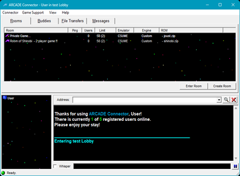

Looking for a way to play those classic arcade games online but haven't really found an easy way to do it?
Well, you found it!
Arcade Connector is a Lobby based, chat client frontend game launcher, utilizing a much older version of Doom Connector, it does just what you expect. Login, say hi to your buddies, setup a game, be it single player or a peer to peer session, you're ready to play over the net. Yes, it's that easy!
Using a MAME variant called UME, in this case, a Client/Server version: CSUME, which allows users to host and connect to a given game. Even though CSUME allows you to do this, there's not really an easy way to know that a game is hosted. Of course unless you're on a local network and yell across the room to your friends that a game is hosted?! This is where the Arcade Connector comes in. Just login, create a room, host a game, and your game is visible to everyone in the Lobby! It's that easy. Now, who ever enters your room has the option to join your game on the fly! No more guess work, no visible IP's, just connect and Join. So if you're wanting to play some classic arcade games over the net?
Check out Arcade Connector!
